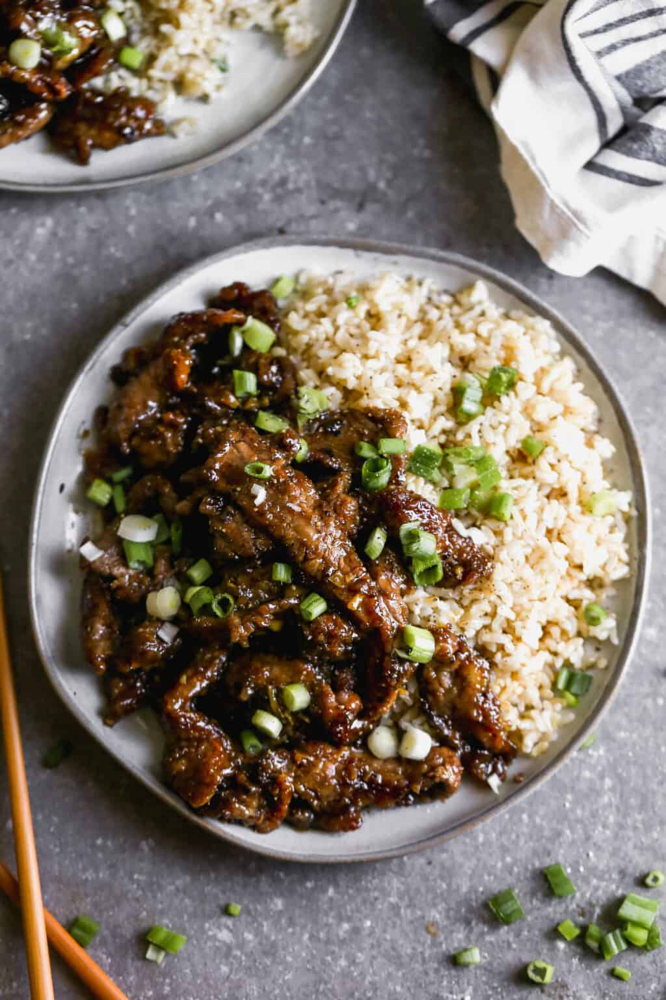

Mongolian Beef

This easy Mongolian Beef recipe is inspired by my favorite takeout dish. Tender beef and fresh green onions in an amazing garlic and ginger sauce, served over hot cooked rice, and ready in 30 minutes.
Ingredients
- 1 pound flank steak , sliced very thinly, across the grain
- 1/3 cup cornstarch
- 2-4 Tablespoons oil (vegetable or canola oil)
- 1/2 cup low-sodium soy sauce
- 1/4 cup water
- 1/2 cup light brown sugar , packed
- 2 tsp cornstarch + 2 tsp water mixed together to make a “slurry”
- 1 teaspoon freshly grated ginger
- 4 cloves garlic , minced
- ▢1 bunch green onion , chopped
- 2 or 3 cups hot cooked rice for serving
Instructions
- Prep steak: Slice the flank steak into 1/4” thin (or thinner) slices, across the grain of the meat. Lay the slices across a large baking sheet or your cutting board, and toss them on all sides with the ⅓ cup cornstarch.
- Cook steak: Heat a large pan or wok over medium-high heat. Once hot add 1 or 2 tablespoons oil. Cook the beef in small batches for about 30-seconds on each side, just until browned on both sides, flipping only once. Remove the beef to a plate and repeat with another batch, as needed.
- Make sauce: In a small bowl whisk together the soy sauce, water, brown sugar, and cornstarch slurry. In the same large pan you used to cook the beef, turn the heat to medium, add the ginger and garlic and sauté for 20 seconds. Add sauce mixture and bring to a simmer. Cook, stirring, until slightly thickened, about 2 minutes.
- Return beef to the pan with the sauce and toss to combine. Cook for 1-2 more minutes until warmed through. Add green onions.
- Serve immediately, with a side of hot cooked rice.